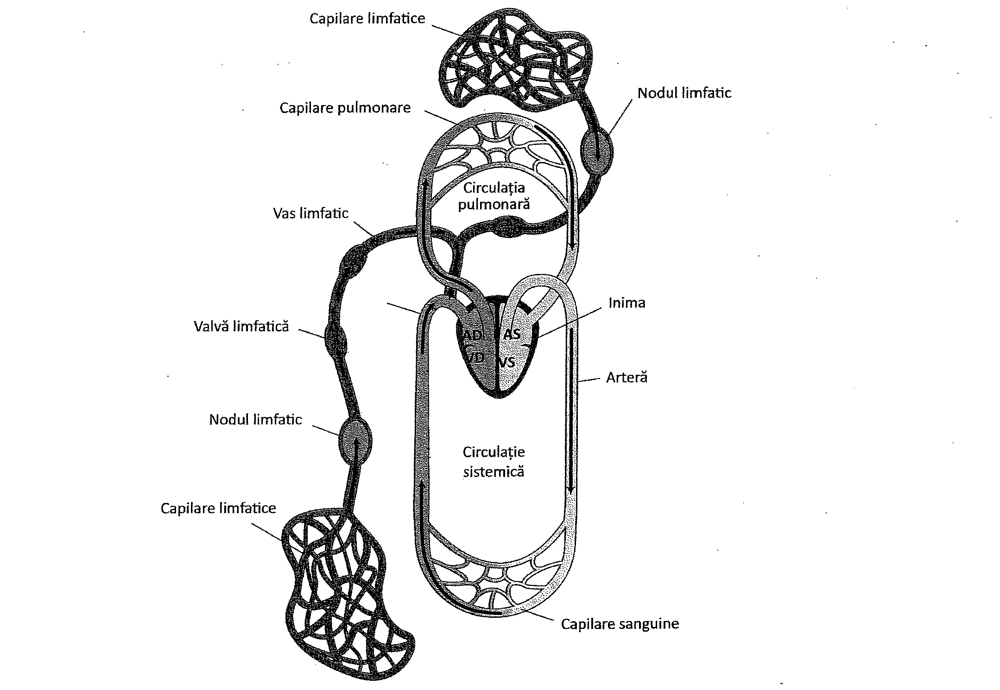
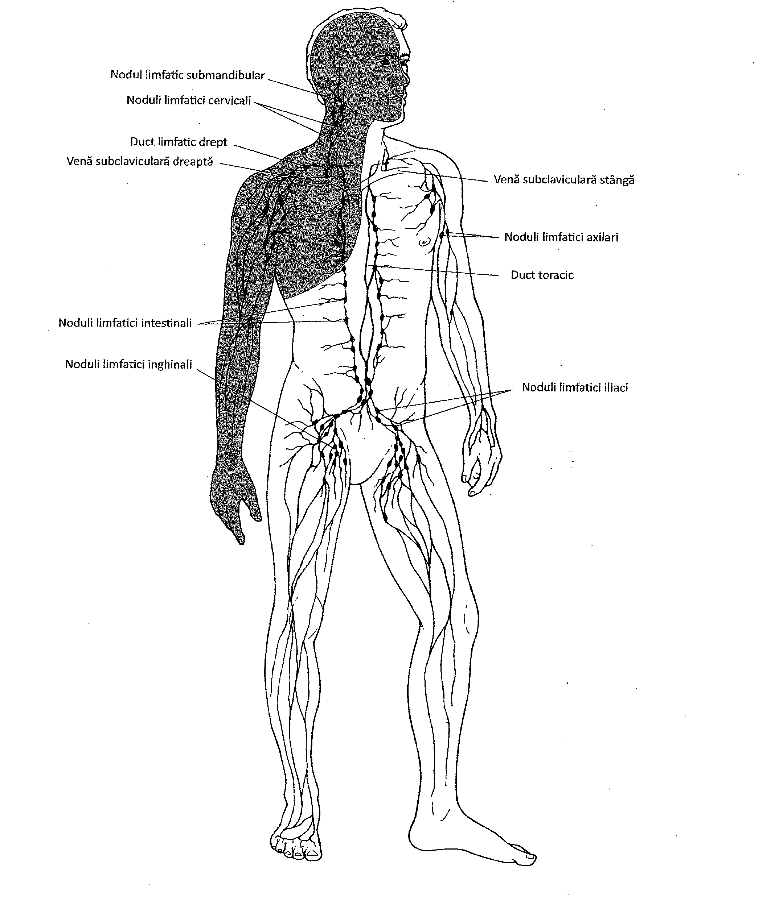
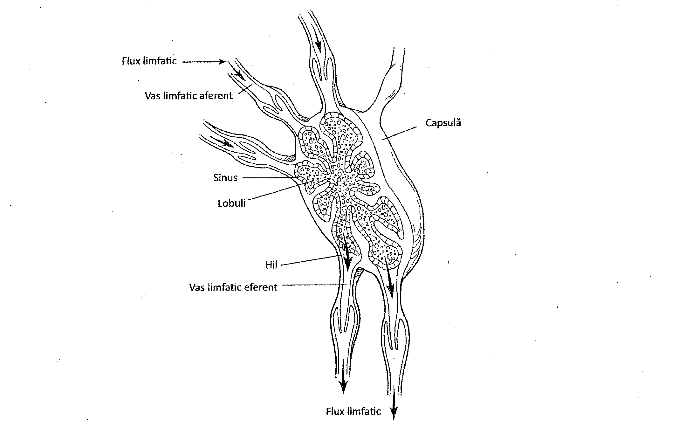
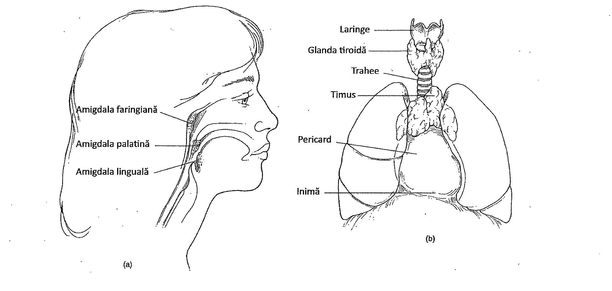
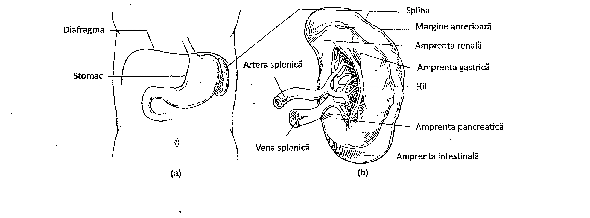

16.1. Sistemul limfatic
Sistemul limfatic, în mod similar sistemului cardiovascular, asigură nutrienți celulelor din țesuturi precum și îndepărtarea reziduurilor metabolice de la nivelul acestora. Spre deosebire de sistemul cardiovascular, sistemul limfatic este unidirecțional, adică se formează în țesuturi și se extinde spre inimă. Vasele și organele sistemului limfatic reintegrează limfa din țesuturi în circulația sanguină, pentru a fi reutilizată.
Sistemul imun este în strânsă legătură cu sistemul limfatic, acesta din urmă fiind responsabil de apărarea specifică a organismului împotriva microorganismelor și a moleculelor străine.
Sistemul imun funcționează prin intermediul celulelor sistemului limfatic; componentele sistemului imun sunt transportate de obicei prin vasele limfatice și în sânge.
Sistemul limfatic
Sistemul limfatic este alcătuit din limfă, vasele limfatice și țesuturile limfoide. Funcția sistemului limfatic presupune întoarcerea limfei din spațiile intercelulare, în sistemul circulator (Figura 16.1).
Vasele limfatice
Vasele limfatice sunt structuri cu pereți subțiri, răspândite în întreg organismul. Ele iau naștere ca o rețea tubulară la nivelul țesuturilor și sunt mai numeroase în tegumente, în special în derm. Vasele microscopice care alcătuiesc rețeaua se numesc capilare limfatice. Acestea au un strat endotelial și, din acest punct de vedere, seamănă cu capilarele sanguine. Totuși ele sunt mai permeabile decât capilarele sanguine și astfel pot drena fluidul interstițial din țesuturi. Acest fluid se numește limfă.
Capilarele limfatice transportă limfa din țesuturi în vase limfatice mai mari. Vasele limfatice la rândul lor se unesc pentru a forma vase și mai mari, care în final formează ductul toracic, cel mai mare vas limfatic din organism. Ductul toracic se formează în cavitatea abdominală și are traseu ascendent în torace, anterior față de vertebre și dorsal față de esofag. Pe măsură ce se apropie de gât, ductul toracic se curbează spre stânga și își golește conținutul în vena subclaviculară stângă. Ductul toracic drenează toată zona subdiafragmatică și jumătatea stângă supradiafragmatică a organismului.
Jumătatea dreaptă supradiafragmatică este drenată de un alt vas mare, numit ductul limfatic drept (Figura 16.2). Acest duct se unește cu vena subclaviculară dreaptă la baza acesteia și își golește conținutul în sistemul cardiovascular. Deoarece atât ductul toracic cât și ductul limfatic drept înapoiază fluide din țesuturi în sistemul cardiovascular, în sistemul limfatic fluidul curge doar într-o singură direcție.
Vasele limfatice au numeroase valve. Valvele favorizează curgerea limfei într-o singură direcție și acționează asemănător valvelor venoase (Capitolul 15). În vasele limfatice, mișcarea fluidului este ajutată de presiunea exercitată de contracția mușchilor striați scheletici asupra pereților vaselor. Vasele limfatice sunt adaptate pentru îndepărtarea moleculelor mari, în special a proteinelor.

16.2. Nodulii limfatici
Înainte ca limfa să intre în circulație, ea trece prin nodulii limfatici, mase de țesut delimitate de o capsulă (Tabelul 16.1). Nodulii limfatici asigură filtrarea limfei înainte ca aceasta să se întoarcă în circulația sanguină. Nodulii limfatici sunt dispuși de-a lungul căilor limfatice mari și servesc drept filtre pentru limfă. Vasele care intră în nodulii limfatici se numesc vase limfatice aferente, iar vasele care părăsesc nodulii limfatici se numesc vase limfatice eferente (Figura 16.3). Nodulii limfatici mai conțin două tipuri de celule, numite limfocite T și limfocite B. Aceste celule stau la baza sistemului imun al organismului. Cele două regiuni distincte ale nodulului limfatic sunt regiunea corticală și cea medulară. Cortexul, regiunea externă, conține grupuri de limfocite organizate în foliculi. În centrul foliculilor se află zone numite centri germinali. Celulele care predomină în această zonă sunt limfocitele B, iar restul celulelor corticale sunt limfocite T.

Extensii ale capsulei împart nodulul limfatic în lobuli mai mici. În interiorul lobulilor, țesutul conjunctiv, reprezentat de fibrele de reticulină, susține principalele celule ale nodulului limfatic, limfocitele B și T. Spațiile libere din lobulii limfatici, numite sinusuri limfatice, sunt zone prin care circulă limfa și care conțin câteva celule. În cortexul nodulului limfatic limfocitele sunt dispuse dens, iar în regiunea centrală, numită medulară, ele sunt dispuse mai rar (zona conține mai puține limfocite).
| Organ | Funcție principală |
|---|---|
| Vase limfatice | Transportă limfa de la țesuturile periferice la venele sistemului cardiovascular |
| Noduli limfatici | Monitorizează compoziția limfei; este locul în care celulele înglobează agenții patogeni și se generează răspunsul imun |
| Splină | Monitorizează sângele circulant; este locul în care celulele înglobează agenți patogeni; este locul celulelor care reglează răspunsul imun |
| Timus | Controlează dezvoltarea și maturarea limfocitelor T |

Nodulii limfatici sunt prezenți peste tot în organism. Se găsesc în principal în țesuturile de la nivelul gâtului (noduli limfatici cervicali); la nivel inghinal (noduli limfatici inghinali); în plica cotului (în fosa cubitală); și în spatele genunchiului (în fosa poplitee). Nodulii limfatici se găsesc și în axilă (noduli limfatici axilari) și în mediastin (regiunea toracică dintre cei doi plămâni). Ei se află și de-a lungul marilor vase de sânge din cavitatea abdominală și alte zone ale corpului.
Amigdalele sunt agregate de țesut limfoid localizate sub epiteliul ce căptușește cavitatea orală și faringele. Termenul „amigdală" se referă de obicei la amigdalele palatine, localizate sub osul palatin. Alte amigdale includ amigdalele faringiene (numite și adenoide), situate în partea superioară a faringelui (Capitolul 17), și amigdalele linguale, care se află în țesutul limbii (Figura 16.4). Aglomerări de țesut limfoid se pot găsi și în peretele tractului intestinal, în special în ileon. Aceste structuri sunt denumite plăcile lui Peyer.

16.3. Timusul
Datorită structurii sale, timusul este considerat un organ al sistemului limfatic. Timusul este localizat în porțiunea superioară a toracelui, în mediastin, între plămâni și dorsal față de stern. În timpul dezvoltării fetale, timusul este un organ relativ mare, bilobat. După vârsta de un an, timusul începe să se atrofieze, iar la sfârșitul pubertății devine un organ foarte mic.
Timusul este împărțit în lobuli, care conțin celule de suport și limfocite T, numite astfel deoarece limfocitele T primitive sunt modificate în acest organ și se transformă în limfocite T mature. Majoritatea limfocitelor T migrează în nodulii limfatici. Structura timusului este diferită de cea a splinei și a nodulilor limfatici, fiind format din numeroși lobuli și elemente limfoide situate în corticală și medulară.
Timusul este considerat și o glandă endocrină, deoarece produce și secretă hormoni numiți timozine (Capitolul 13). Acești hormoni contribuie la maturarea limfocitelor T.
16.4. Splina
Splina este un organ limfoid, deoarece funcțiile sale sunt similare cu cele ale sistemului limfatic, ea conținând celule limfoide. Splina este localizată subdiafragmatic, în porțiunea superioară stângă a cavității abdominale.
Forma splinei este determinată de structurile cu care intră în contact. Splina este convexă la contactul ei cu diafragmei și concavă în trei zone: la contactul cu rinichiul stâng, stomacul și intestinul gros. Aria în care vasele mari intră și ies din splină se numește hil.
Ca și nodulii limfatici, splina este delimitată de o capsulă de țesut conjunctiv, care se extinde spre interior sub forma unor septe scurte dar care nu comportimentează splina în lobuli. Sângele intră în splină prin intermediul arterei splenice (Figura 16.5).

Splina are câteva funcții importante: este un rezervor de limfocite pentru organism, filtrează sângele, este importantă pentru metabolismul globulelor roșii și al fierului (macrofagele splenice fagocitează globulele roșii îmbătrânite sau distruse), reciclează fierul și îl trimite la ficat, servește drept depozit de sânge și conține limfocite B și T pentru răspunsul imun.
16.5. Limfa
Fluidul vehiculat prin vasele limfatice se numește limfă. Limfa derivă din sânge. Este alcătuită din fluidul ce trece forțat prin pereții semipermeabili ai capilarelor, sub acțiunea presiunii exercitate de inimă. Fluidul care se acumulează în spațiile tisulare conține substanțe eliberate de celule. Proteinele din acest fluid sunt în general incapabile să treacă înapoi în capilare, și rămân în concentrație crescută în limfă. În plus, nici microorganismele prezente nu vor putea trece cu ușurință în capilare, rămânând astfel în limfă.
Fluidul tisular care intră într-un vas limfatic învecinat constituie limfa. Limfa trece prin nodulii limfatici, iar limfocitele și monocitele pătrund în limfă la acest nivel. Acest amestec de fluid și celule filtrate se va reîntoarce în circulație.
La nivelul tractului gastrointestinal, limfa are consistență lăptoasă. Când grăsimile sunt digerate în sistemul digestiv (Capitolul 18), produșii rezultați sunt acizii grași, glicerolul și alte componente. În timp ce alte molecule trec în capilare, grăsimile sunt reconstituite și trec în vasele limfatice ale peretelui intestinal. Aceste vase limfatice sunt denumite capilare limfatice. Compoziția bogată în grăsimi dă limfei un aspect lăptos.
O acumulare a lichidului interstițial în spațiile intercelulare se numește edem. Edemul apare dacă vasele limfatice sunt blocate, de exemplu într-o infecție. Edemul apare și dacă mișcarea sângelui în vene este încetinită sau dacă sângele se acumulează în vene. Trecerea proteinelor în spațiile intercelulare, așa cum se întâmplă în timpul inflamației, este o altă cauză posibilă a edemului. Proteinele atrag apa din vase prin osmoză, iar apa contribuie la tumefiere. Tumefierea va dispărea pe măsură ce lichidul interstițial acumulat este drenat de limfă.